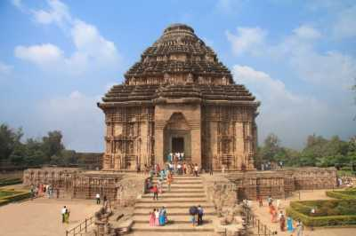
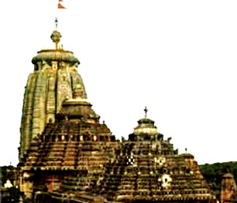
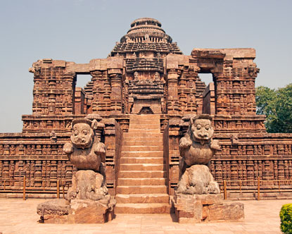
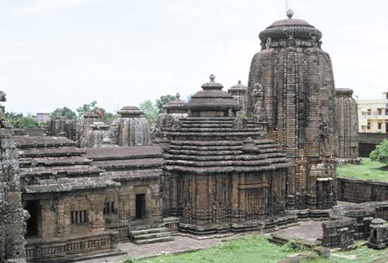

History Of Odisha
Temples & Monuments
Wildlife
Heritage Odisha
Art & Craft
Tourist Spots
With a documented history stretching back to 2000 BC, it is no wonder that Odisha is dotted with with ancient monuments ranging from the ruins of Sisupalgarh to the magnificent Lingaraj and Jagannath temples, from the world heritage site of the Konark Sun temple to the exquisitely carved Mukteswar and other such temples. The various archaeological finds at Ratnagiri, Lalitgiri, Udaigiri and other locations prove that Odisha has also been influenced by Buddhist thought. Jainism too has left its mark on Odisha as the rock cut caves at Khandagiri & Udaygiri as well as remains at other locations show.

Temples
Major Temples:
• Puri Jagannath - The temple of Lord Jagannath ('Lord of the Universe') at Puri is one of the most sacred pilgrimage spots in India, one of the four abodes (dhamas) of the divine that lie on the four directions of the compass. The present temple structure was built in the twelfth century by the Ganga king, Chodagangadeva, replacing an earlier structure which probably dated to the tenth century.

• Konark - The magnificent Sun Temple at Konark is the culmination of Odishan temple architecture, and one of the most stunning monuments of religious architecture in the world. The poet Rabindranath Tagore said of Konark that 'here the language of stone surpasses the language of man', and it is true that the experience of Konark is impossible to translate into words.

• Lingaraja - The great Lingaraja (eleventh century), which soars above the city of Bhubaneswar and dominates the landscape as far as 15 kms away, represents Odishan temple architecture at its most mature and fully developed stage. It has, in fact, been described as 'time quintessence of Odishan architecture'.
Although the temple as it now exists can be dated to the eleventh century, Sanskrit texts hold that there was a stone temple here as early as the seventh century AD, and fragments of this earlier structure do seem to appear in the extant building.
